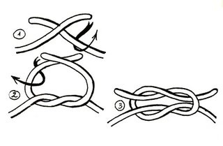
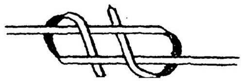
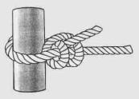

CÁC LOẠI NÚT ĐỂ NỐI DÂY
1.NÚT NỐI ĐƠN
Ứng dụng từ nút mỏ chim, dùng để nối thật nhanh 2 đầu dây mềm. Nút này rất chắc chắn nhưng cũng rất khó tháo gỡ khi đa bị thít chặt.
2. NÚT DẸT. - Là nút nối thông dụng nhất thế giới. Dùng để nối hai đầu dây có tiết diện bằng nhau.Dùng buộc đồ, gói hàng, buộc kết thúc dây băng cứu thương.

NÚT DẸT ĐƠN NÚT DẸT KÉP
3. NÚT BÒ- Được phát hiện do cách làm sai của nút Dẹt.Khi làm xong nó có hình thù giống như cái sừng bò. Dùng để buộc dây kẽm gai hàng rào.
4. NÚT THỢ DỆT.- Dùng để nối chỉ dệt, nối 2 đầu dây không bằng nhau. Dùng để buộc góc mái lều có may sẵn vòng dây vải ( nút thợ dệt có khóa sống ).
THỢ DỆT ĐƠN
THỢ DỆT ĐƠN CÓ KHÓA SỐNG
THỢ DỆT KÉP
5. NÚT NỐI CHỈ CÂU. - Dùng để nối chỉ câu, nối 2 đầu dây trơn bằng nhau. Dùng để kéo màn sân khấu hay rạp hát.
NỐI CHỈ CÂU KHÓA SỐNG
6. TAM CỐ ( Carich đơn )- Cách làm gần giống như nút thợ dệt. Dùng để nối hai sợi dây cáp hay dây thừng to bằng nhau.
TAM CỐ KÉP ( Carich kép )- Dùng để nói hai đầy dây thừng bằng nhau. Rất chắc chắn và đẹp.
7. NÚT ĐẦU RUỒI- Dùng để nối 2 sợi lạt hay sợi mây
8. NÚT NGẠNH TRÊ- Dùng để nối 2 đầu dây dẹp như sợi lạt hay sợi mây ( giống như nút đầu ruồi )
NGẠNH TRÊ ĐƠN

NGẠNH TRÊ KÉP
CÁC
NÚT BUỘC TREO,KÉO
1. NÚT THÒNG LỌNG - Dùng để bắt súc vật, buộc một sợi dây vào một vật cố định ( cột, đinh, vòng sắt…), buộc xiết một vật nào đó ( có thể nới rộng vòng nút to hay nhỏ tùy ý )
THÒNG LỌNG ĐƠN
THÒNG LỌNG KÉP
2. NÚT SƠN CA.
- Dùng để treo phần giữa dây lên một xà ngang, có thể dùng để buộc xiết một bó củi lớn để kéo đi.
3. NÚT KÉO GỖ.
- Dùng để kéo gỗ, chức năng xiết như nút thòng lọng. Ứng dụng để căng dây phơi đồ hoặc mắc võng vào thân cây.
CÁC LOẠI NÚT NEO, TĂNG LỀU
1. NÚT THUYỀN CHÀI.- Dùng để neo thuyền vào cọc trên bờ, dùng để buộc đầu gậy lều ( cố định bạt với đầu gậy ). Là khởi đầu cho tất cả các nút ráp nối cây.
2. NÚT CHẠY. ( Căng lều ).
- Được sử dụng thường xuyên nhất cho những góc lều với cọc nhỏ. Trường hợp dây ngắn vẫn làm được.
3. NÚT BỒ CÂU( Căng lều ).
- Khi cần tăng lều ở một độ căng tối đa mà chỉ có một người làm, ta nên thực hiện nút này.Thường thì với gậy chính của sống lều, ta dùng nút này để buộc vào cọc chính.
4. MỘT VÒNG HAI KHÓA- Dùng để khóa lại những nút dây buộc neo.

5. NÚT QUAI CHÈO: Công dụng như nút thuyền chài
NÚT CẤP CỨU
1. GHẾ ĐƠN- Dùng để kéo một người từ dưới sâu lên hay thả một người từ trên cao xuống

2. GHẾ KÉP- Nút ghế đơn khi ngồi có thể làm cho người ta đau. Do đó, gập đôi sợi dây để tạo ra hai vòng dây, khi đó ngồi sẽ thoải mái hơn.
NÚT CHÂN CHÓ - Dùng để thâu dây. Nút chân chó còn giúp ta lấp đi một chổ sờn ở giữa của thân dây.
1. NÚT CHÂN NGỖNG- Sau khi sử dụng nút chạy xong mà còn dư dây nhiều thì ta làm nút chân ngỗng cho dây nằm gọn dọc theo thân dây.
2.
NÚT MÓC XÍCHDùng
để thu ngắn dây, trang trí dây
đeo. Là sự kết hợp của nhiều
nút thòng lọng.
3.
NÚT HOA ĐAN
4. HOA 3 CÁNH
5. HOA 4 CÁNH
6.NÚT CÚC ÁO NHẬT BẢN
CÁC NÚT DÙNG GHÉP NỐI
1.
NÚT VẤN NGẮN ( ráp cậy dọc ) -
Dùng để ráp 2 cây ngắn thành
1 cây dài theo chiều dọc.
Cách1 :
Khởi đầu bằng nút thuyền
chài
Cách
2 :
Khởi đầu bằng nút thòng lọng
2. NÚT VẤN DÀI
3.
RÁP CÂY CHỮ THẬP.
- Dùng để ráp 2 cây theo thế vuông góc với nhau giống hình chữ thập. Khởi đầu bằng nút thuyền chài, hoặc thòng lọng.
4. RÁP CÂY CHỮ NHÂN.
-
Dùng để ráp 2 cây chéo nhau
hoặc ráp 2 cây vuông góc với
nhau nhưng cách cột nút theo hình
chéo chữ nhân. Khởi đầu
bằng nút thuyền chài, hoặc thòng
lọng.
5.
RÁP CHẠC BA.
-
Dùng để ráp 3 cây bằng nhau lại
thành một kiềng 3 chân. - Khởi
đầu bằng nút thuyền chài, hoặc
thòng lọng.
- Khi làm thủ công
trại thì nút chạc ba là nút
rất thường gặp.
6. BỆN VÁN SÀN
7.
GHẾ XÍCH ĐU